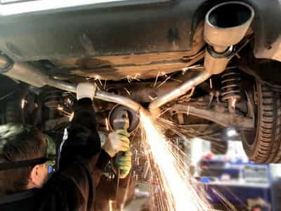
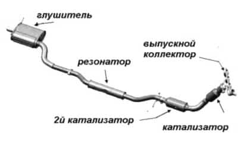
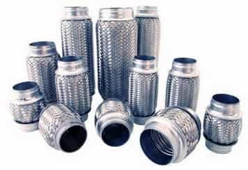

CТО
CТО
Капелла
ВНИМАНИЕ! Мы переехали!!!
Наш новый адрес:
ЧЕСТНЫЙ ремонт автомобилей в Минске в рассрочку.
Ремонт глушителей, замена гофры, катализаторов, резонаторов, замена прокладки выпускного коллектора, сварочные работы и многое другое на нашей СТО в Минске.
Официальная гарантия на все работы.
ВЫ ПЛАТИТЕ ТОЛЬКО ЗА РЕЗУЛЬТАТ!
Звоните ежедневно
с 9 до 20 часов!
 +375 (33) 600 23 47
+375 (33) 600 23 47
 +375 (29) 627 49 07
+375 (29) 627 49 07
или напишите свой вопрос на Viber
 +375 29 627 49 07
+375 29 627 49 07
 РАССРОЧКА на 6 месяцев!!!
РАССРОЧКА на 6 месяцев!!!
Ремонт авто сегодня, оплата потом!
Оцените нас:
Мы проводим качественный и недорогой ремонт глушителей и замену гофры или катализатора. Цена на ремонт глушителя у нас на СТО формируется исходя из количества сварных швов и типа элемента глушителя, который необходимо заменить.
Стоимость одного сварного шва 20 бел.руб.
Стоимость работы по ремонту глушителя начинается от 20 бел.руб. и зависит от количества швов и доступа к ремонтируемому участку глушителя.
Стоимость работ по замене гофры как правило, составляет 30-40 руб., но может и превышать эту сумму, если доступ к гофре затруднен ввиду конструктивных особенностей Вашего авто и требуются дополнительные работы.
В любом случае, все работы предварительно согласовываются и никаких "сюрпризов" Вас по завершению работ не ожидает. Продолжительность ремонта глушителя чаще всего не превышает 1-2 часа.
Все необходимые запасные части для ремонта глушителя или замены гофры мы можем приобрести самостоятельно. Опытный мастер даст совет по выбору качественных запасных частей для ремонта глушителя, замене гофры или катализатора. Подскажет к качеству каких запчастей стоит подойти более тщательно.
На все, производимые на нашей СТО в Минске, работы по ремонту глушителя, замене гофры или катализатора Вы получите от нас ОФИЦИАЛЬНУЮ ГАРАНТИЮ. Но даже по ее истечении мы не бросаем своих клиентов и, если гарантийный случай наступил не в результате естественного износа, а по нашей вине, то мы исправим и заменим вышедшие из строя части ЗА СВОЙ СЧЕТ.
В дополнение к любому ремонту авто мы выполним бесплатную диагностику всей подвески и ходовой части Вашего автомобиля. Проведем компьютерную диагностику двигателя на наличие ошибок.
Узнать цены на ремонт глушителя, замену гофры или катализатора, а также на другие услуги по ремонту именно Вашей марки автомобиля Вы можете, задав свой вопрос мастеру на  +375 (29) 627-49-07 или оставив свой номер телефона в поле снизу, и, как только мастер освободится, он перезвонит Вам, ответит на все Ваши вопросы и запишет на диагностику или ремонт Вашего автомобиля на удобное для Вас время.
+375 (29) 627-49-07 или оставив свой номер телефона в поле снизу, и, как только мастер освободится, он перезвонит Вам, ответит на все Ваши вопросы и запишет на диагностику или ремонт Вашего автомобиля на удобное для Вас время.
Вы можете оплатить услуги по ремонту глушителя, замене гофры или катализатора в РАССРОЧКУ!!! При этом цена услуг останется прежней. Условия оплаты ремонта глушителя, а также других услуг по ремонту авто в рассрочку указаны в шапке нашего сайта.
 Как всем известно, основная функция выхлопной системы (глушителя) это отвод отработавших газов из двигателя, снижение уровня шума от работы мотора и уменьшение вредных выбросов от сгорания топлива в двигателе авто. Но рассмотрим отдельные части глушителя по порядку.
Во всех современных авто глушитель начинается с выпускного коллектора (в простонародье - штаны). Выпускной коллектор соединен непосредственно с двигателем автомобиля и объединяет все выводы от цилиндров в один. В коллектор попадают газы, температура которых может достигать 600 градусов, поэтому этот участок глушителя автомобиля изготавливается из прочного и огнестойкого металла. Кроме этого, коллектор помогает продувать камеры сгорания двигателя. Так как в коллекторе давление ниже, чем в камере сгорания, то в трубах коллектора образуется волна, которая, отражаясь от резонатора или катализатора, поступает обратно к камере сгорания двигателя, и, когда происходит очередной цикл выхлопа газов, коллектор способствует их выведению. После выпускного коллектора отработанные газы поступают в катализатор, который состоит из керамических сот. На поверхности этих сот находится слой платиноиридиевого сплава, соприкасаясь с которым, в результате химической реакции из выхлопных газов образуется оксид азота и кислород, участвующий в сгорании остатков паров топлива. В результате, из катализатора в выхлопную трубу выходит смесь из азота и диоксида углерода. После катализатора следует основная часть - сам глушитель, объединяющий в себя резонатор, глушитель и выхлопную трубу с наконечником. Основная функция этой части выхлопной системы авто - снижение шума от работы двигателя. Корпус глушителя изготавливается из разных видов стали. Обычный - служит около 2-х лет, покрытый алюминием - 3-6 лет, из нержавейки - около 10-ти лет. Чаще всего, работы по ремонту глушителя заключаются в замене подгнивших и вышедших из строя в результате коррозии отдельных его элементов, таких как резонатор, катализатор, гофра или коллектор. Еще чаще необходимо просто кое-где заварить, подварить или вырезать часть подгнившей выхлопной трубы глушителя, заменить крепление. Мы выполняем все эти виды работ быстро и недорого.
Гофра является элементом выхлопной системы авто, предохраняющим глушитель от вибраций, исходящих от работы двигателя. Гофра устанавливается в месте наибольших вибраций, как правило, в приемной трубе. Внешне гофры различных авто почти ничем не отличаются друг от друга. Основное отличие - диаметр и длина гофры. Гофры так же различаются на двух- или трехслойные, с двойной или тройной оплеткой. От этого зависит в большей степени срок её службы. Выбирая гофру под замену надо обращать особое внимание на ее качество. В основном все гофры изготавливаются из высоколегированной нержавеющей стали и купить гофру из другого металла практически нереально. Качество гофры заключается в хорошем соотношении прочность/эластичность. И поэтому гофру для замены надо подбирать по зарекомендовавшим себя на рынке производителям. Некачественная гофра быстро прогорит и разорвется. Качественная гофра должна как можно дольше сохранять свои свойства при высоких температурах.
У нас на рынке продаются два основных типа гофр для глушителей автомобилей - с двумя оплетками и с тремя оплетками.
Гофра с двумя оплетками - это наиболее распространенный тип гофры. Наружная оплетка служит для защиты от сжатий и колебаний. Внутренняя оплетка служит для предотвращения деформации профилированной внутренней поверхности гофры. Гофра с двумя оплетками применяется в автомобилях с бензиновым типом двигателя.
Гофра с тремя оплетками - это более жесткий тип гофры. Дополнительная внутренняя оплетка данного типа гофры изготавливается из флексебельной трубы на подобие металлорукава. Гофры с тремя оплетками устанавливаются в глушители, как бензиновых автомобилей, так и в авто с дизельным двигателем.
Причиной выхода из строя гофры в основном является истекший ресурс ее службы. Она прогорает со временем, ржавеет, рвется от повреждения летящими из-под колес авто камнями. Поэтому чем больше вы эксплуатируете автомобиль, тем быстрее изнашивается и гофра. Прогоревшие или порванные гофры ремонту не подлежат. В условиях автосервиса это просто невозможно. Остается только замена гофры. А с заменой гофры лучше не затягивать, так как с вышедшей из строя гофрой от повышенных вибраций страдает, разрушаясь, весь глушитель. Помимо этого увеличивается шум от работы двигателя и, пусть и не значительно, расход топлива.
Отправка запроса Вас ни к чему не обязывает. Спрашивайте, мы рады будем Вам ответить!
Заполните поля (модель автомобиля или VIN-номер, способ получения ответа, описание требуемого ремонта) и отправьте запрос.
Ответ с ценой интересующего Вас ремонта и условиями Вы получите через 30-60 минут указанным Вами способом.
Если произошла задержка с получением ответа, то не судите строго, клиентов много и от их количества зависит насколько быстро мастер обработает Ваш запрос.
Мы гарантируем, что введенная Вами информация не попадет в руки третьих лиц. Мы не используем Ваши контакты для рассылок и гарантируем конфиденциальность введенной Вами информации.
Остались вопросы по ремонту автомобиля или работе СТО?
Задайте их по телефонам  +375 (33) 600 23 47 или
+375 (33) 600 23 47 или  +375 (29) 627 49 07 или отправьте свой вопрос мастеру на
+375 (29) 627 49 07 или отправьте свой вопрос мастеру на +375 29 627 49 07
+375 29 627 49 07
* сроки гарантии на выполненные работы регулируются п.107 Главы 15 "Правил бытового обслуживания потребителей"
минск.мой-автосервис.бел © 2016-2020 ООО "КапеллаПлюс" УНП 191187089